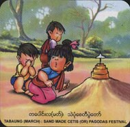

Festivals
- Horsemanship
- Htamaneipwe
- Sand Pagodas
- Thingyan
- Kason Nyaungyaltwinpwe
- Sar Pyan Pwe
- Wa So Pwe
- Sar Yale Tan Mal Pwe
- Hlay Pyaing pwe
- Mee Tun Pwe
- Ka Htain Pwe
- Sarsodaw
Months
- January
- February
- March
- April
- May
- June
- July
- August
- September
- October
- November
- December
|
Tabaung (March)

It is the 12th Myanmar month, falling in February March. In ancient days it was a time for what was known as festivals
of sand pagodas, in which people built sand pagodas on the sandbanks and hold festivities on the occasion.
Now the practice is on the wane, except in some cities and towns in upper part of the country, but the time
is still held sacred for holding of Buddha Pujayanti ceremonies, that is, occasions for rededication of the pagodas.
|